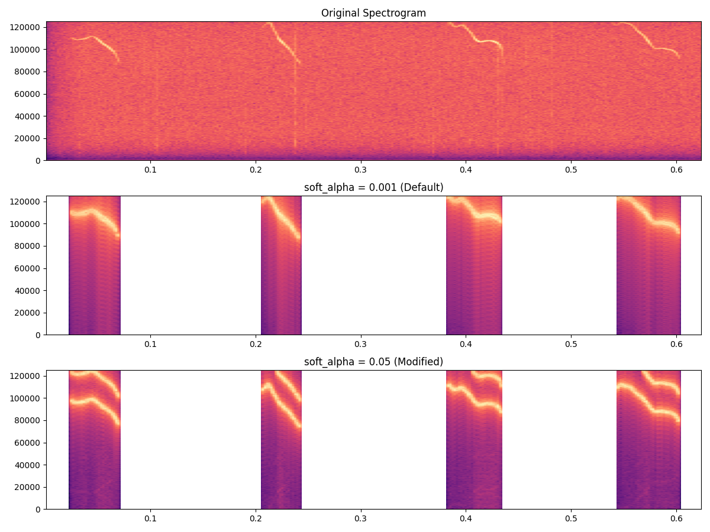
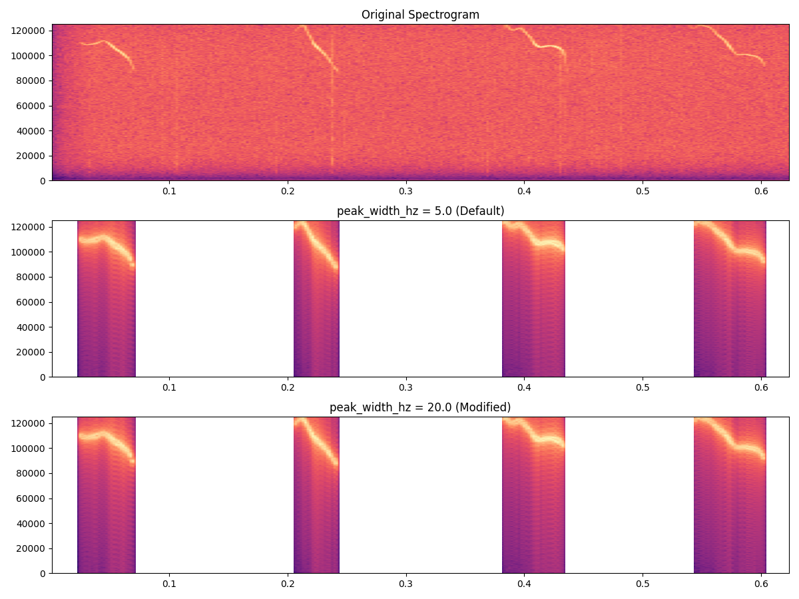
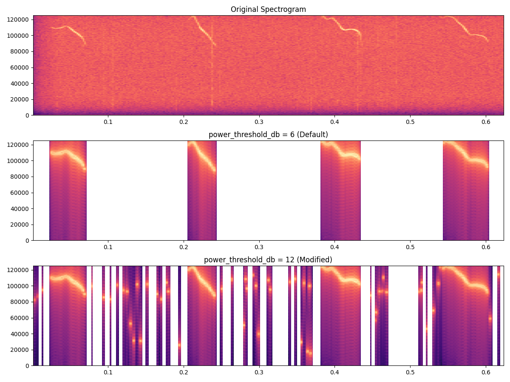
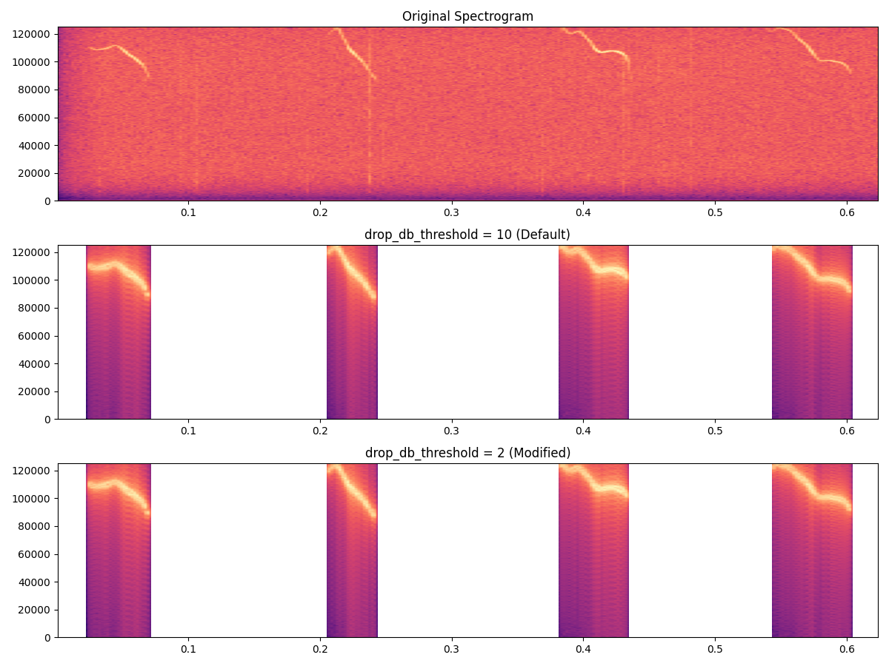
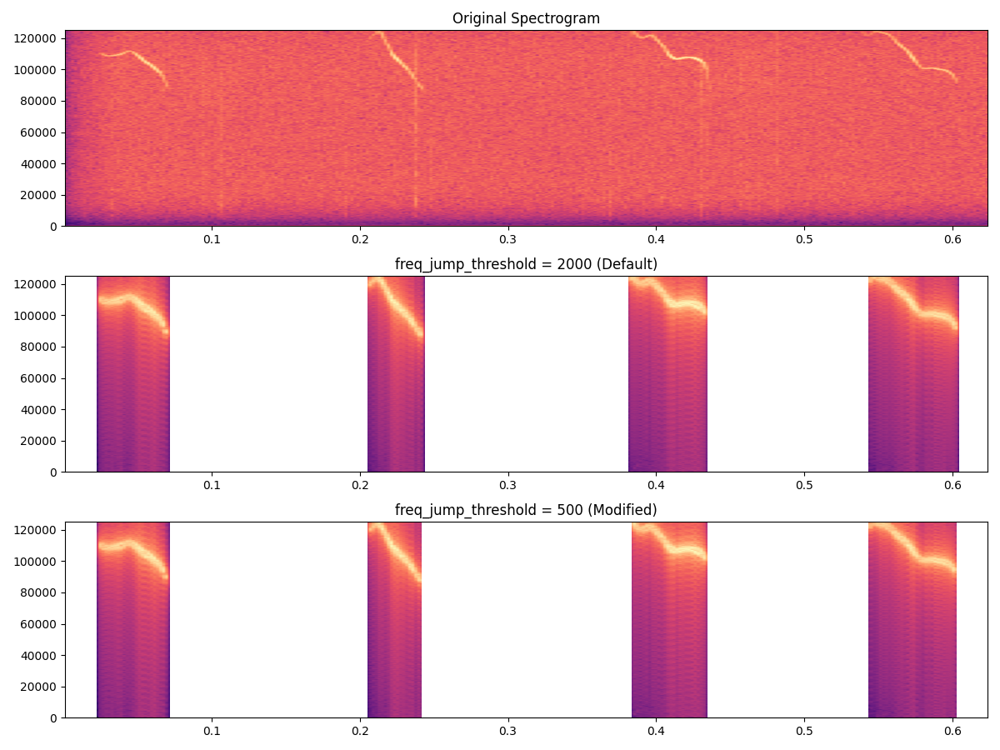
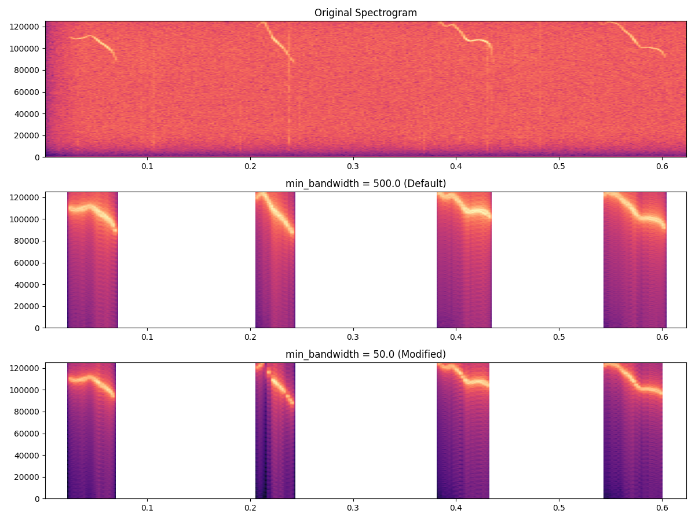
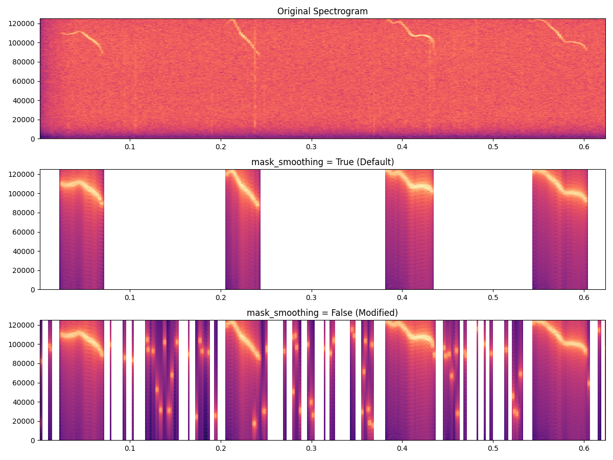

Denoise Parameter Guide
This document provides visual comparisons and detailed explanations for each denoising parameter in the noise2signal pipeline, optimized for mouse vocalization audio. Use this guide to understand how each parameter affects the denoising result and to help tune them effectively.
1. Continuous Mask Parameters
1.1 alpha
- Role: Scales the ridge bandwidth for creating the continuous mask.
- Default:
0.5 - Test Value:
1.5 - Effect: Higher values yield broader masks, capturing more surrounding frequencies; lower values focus tightly on the detected ridge.
Comparison: alpha=0.5 (Default) vs. alpha=1.5 (Modified)
1.2 keep_ratio
- Role: Determines the threshold ratio for the continuous mask’s bandwidth relative to the detected ridge width.
- Default:
0.8 - Test Value:
0.4 - Effect: Higher ratios preserve more of the ridge (narrow mask); lower ratios remove more background noise (wider mask).
Comparison: keep_ratio=0.8 (Default) vs. keep_ratio=0.4 (Modified)
1.3 soft_alpha
- Role: Bandwidth softening factor for dynamic alpha adjustment.
- Default:
0.001 - Test Value:
0.05 - Effect: Higher values create more dynamic bandwidth adjustment based on local ridge properties.

Comparison: soft_alpha=0.001 (Default) vs. soft_alpha=0.05 (Modified)
2. Peak Mask Parameters
2.1 num_peaks
- Role: Number of spectral peaks to include in the peak-based mask.
- Default:
4 - Test Value:
10 - Effect: More peaks capture additional harmonics or noise spikes; fewer peaks focus on the strongest frequencies.
Comparison: num_peaks=4 (Default) vs. num_peaks=10 (Modified)
2.2 peak_width_hz
- Role: Width in Hz around each detected peak for masking.
- Default:
5.0 - Test Value:
20.0 - Effect: Broader widths remove more adjacent noise; narrower widths preserve fine frequency detail.

Comparison: peak_width_hz=5.0 (Default) vs. peak_width_hz=20.0 (Modified)
3. Activity Detection Parameters
3.1 power_threshold_db
- Role: dB threshold above baseline to mark active regions.
- Default:
6 - Test Value:
12 - Effect: Higher thresholds remove low-power background noise; lower thresholds may introduce residual noise.

Comparison: power_threshold_db=6 (Default) vs. power_threshold_db=12 (Modified)
3.2 min_segment_length
- Role: Minimum length of active segment to be considered valid.
- Default:
15 - Test Value:
2 - Effect: Longer segments filter out brief noise bursts; shorter segments preserve transient sounds.
Comparison: min_segment_length=15 (Default) vs. min_segment_length=2 (Modified)
4. Ridge Detection and Reliability Parameters
4.1 drop_db_threshold
- Role: dB drop threshold to mark unreliable ridge points.
- Default:
10 - Test Value:
2 - Effect: Higher thresholds are more tolerant of power drops; lower thresholds mark more points as unreliable.

Comparison: drop_db_threshold=10 (Default) vs. drop_db_threshold=2 (Modified)
4.2 freq_jump_threshold
- Role: Maximum allowed ridge frequency jump in Hz.
- Default:
2000 - Test Value:
500 - Effect: Lower values enforce smoother frequency tracking; higher values allow more abrupt frequency changes.

Comparison: freq_jump_threshold=2000 (Default) vs. freq_jump_threshold=500 (Modified)
5. Bandwidth Control Parameters
5.1 min_bandwidth
- Role: Minimum allowed bandwidth in Hz.
- Default:
500.0 - Test Value:
50.0 - Effect: Lower values allow tighter frequency selection; higher values ensure broader coverage.

Comparison: min_bandwidth=500.0 (Default) vs. min_bandwidth=50.0 (Modified)
5.2 max_bandwidth
- Role: Maximum allowed bandwidth in Hz.
- Default:
10000.0 - Test Value:
20000.0 - Effect: Higher values allow wider frequency selection; lower values constrain bandwidth.
Comparison: max_bandwidth=10000.0 (Default) vs. max_bandwidth=20000.0 (Modified)
5.3 bandwidth_smooth_window
- Role: Smoothing window size for bandwidth estimation.
- Default:
7 - Test Value:
1 - Effect: Larger windows create smoother bandwidth transitions; smaller windows preserve rapid changes.
Comparison: bandwidth_smooth_window=7 (Default) vs. bandwidth_smooth_window=1 (Modified)
6. Mask Combination Parameters
6.1 mask_contribution
- Role: Weight of the continuous mask in the final combination.
- Default:
0.7 - Test Value:
1.0 - Effect: Higher values emphasize ridge-based masking; lower values reduce continuous mask influence.
Comparison: mask_contribution=0.7 (Default) vs. mask_contribution=1.0 (Modified)
6.2 mask_peak_contribution
- Role: Weight of the peak mask in the final combination.
- Default:
0.3 - Test Value:
1.0 - Effect: Higher values emphasize peak-based masking; lower values reduce peak mask influence.
Comparison: mask_peak_contribution=0.3 (Default) vs. mask_peak_contribution=1.0 (Modified)
7. Mask Post-Processing Parameters
7.1 mask_smoothing
- Role: Enable/disable temporal smoothing of the combined mask.
- Default:
True - Test Value:
False - Effect: Smoothing creates more natural transitions; disabling preserves sharp mask edges.

Comparison: mask_smoothing=True (Default) vs. mask_smoothing=False (Modified)
7.2 mask_smooth_window
- Role: Window size for mask smoothing (when enabled).
- Default:
5 - Test Value:
15 - Effect: Larger windows create smoother mask transitions; smaller windows preserve temporal detail.

Comparison: mask_smooth_window=5 (Default) vs. mask_smooth_window=15 (Modified)
8. Best Practices & Tuning Tips
Parameter Tuning Strategy
- Start with Activity Detection: Adjust
power_threshold_dbandmin_segment_lengthto identify relevant audio segments - Refine Ridge Detection: Set
drop_db_thresholdandfreq_jump_thresholdfor stable frequency tracking - Optimize Bandwidth Control: Tune
min_bandwidth,max_bandwidth, andbandwidth_smooth_windowfor frequency coverage - Balance Mask Components: Adjust
alpha,keep_ratio,mask_contribution, andmask_peak_contributionfor optimal noise removal - Fine-tune Post-processing: Set
mask_smoothingandmask_smooth_windowfor natural transitions
Parameter Groups
- Core Ridge Parameters:
alpha,keep_ratio,soft_alpha - Peak Detection:
num_peaks,peak_width_hz
- Activity Detection:
power_threshold_db,min_segment_length - Ridge Reliability:
drop_db_threshold,freq_jump_threshold - Bandwidth Control:
min_bandwidth,max_bandwidth,bandwidth_smooth_window - Mask Combination:
mask_contribution,mask_peak_contribution - Post-processing:
mask_smoothing,mask_smooth_window
Common Use Cases
- High SNR Mouse Calls: Lower
power_threshold_db, higherkeep_ratio - Noisy Recordings: Higher
power_threshold_db, loweralpha - Harmonic Calls: Increase
num_peaksandpeak_width_hz - Transient Sounds: Disable
mask_smoothing, lowermin_segment_length
Performance Notes
- All comparison images show: Original (top), Default parameters (middle), Modified parameters (bottom)
- Images generated from
/Users/mz/Desktop/MS_B/mice/mouse_natural_sentence.wav - Generated using the
contract parameters.pyscript
End of Parameter Guide